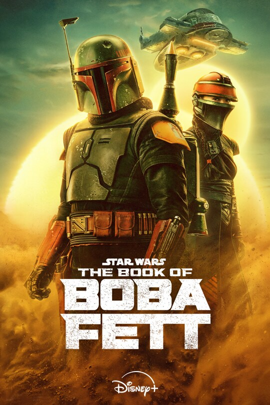
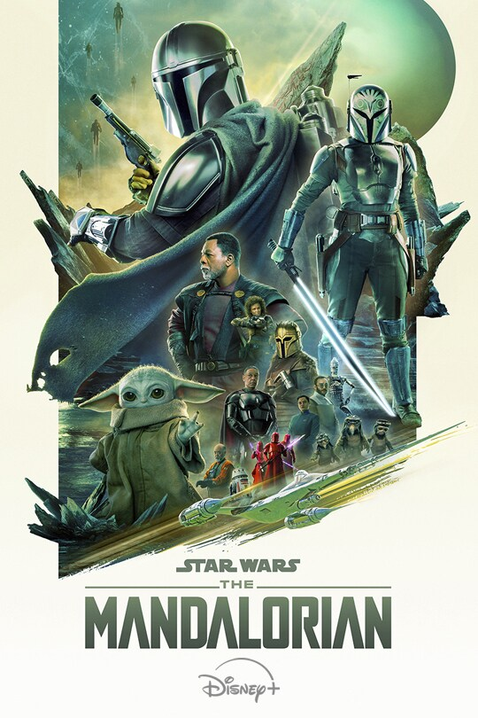
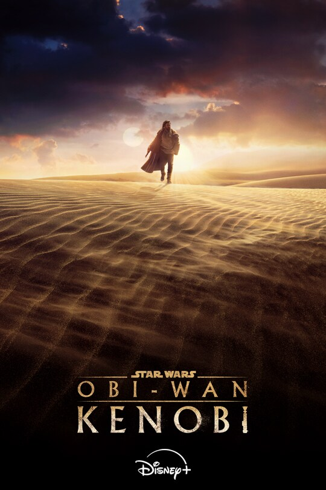
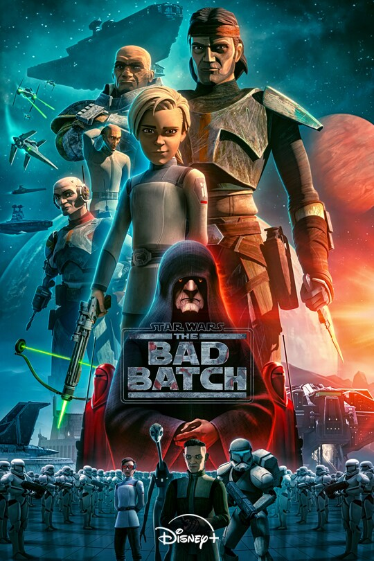
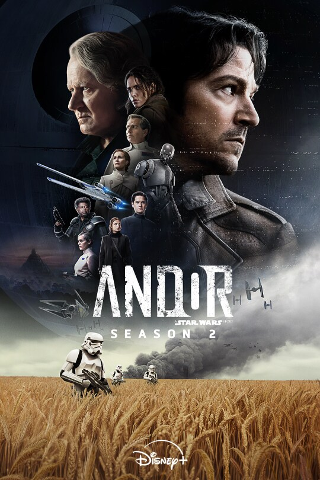

The Book of Boba Fett

Spin-off de "The Mandalorian" centrado en el cazarecompensas Boba Fett y su lugarteniente Fennec Shand, que vuelven al planeta Tatooine lidiando con el inframundo galáctico para reclamar el territorio que en su día gobernó Jabba el Hutt.
The Mandalorian

The Mandalorian es una serie de televisión ambientada en el universo de Star Wars, que sigue las aventuras de un cazarrecompensas solitario llamado Din Djarin, quien es mandaloriano, en los confines de la galaxia, después de la caída del Imperio Galáctico y antes del surgimiento de la Primera Orden. La serie se centra en su viaje protegiendo a un niño llamado Grogu (también conocido como "Baby Yoda") y en su intento de devolverlo a su especie, los Jedi. La serie explora temas como la identidad, la redención, la familia, y la lucha entre el bien y el mal, con un fuerte enfoque en la cultura y el credo mandalorianos.
Obi Wan Kenobi

La serie "Obi-Wan Kenobi" se sitúa diez años después de los eventos de "Star Wars: La Venganza de los Sith", donde Obi-Wan sufre la pérdida de su amigo y aprendiz, Anakin Skywalker, quien se convierte en Darth Vader. La serie sigue a Obi-Wan en su exilio en Tatooine, donde vela por un joven Luke Skywalker y enfrenta las consecuencias de su derrota, mientras es perseguido por el Imperio.
Bad Batch

The Bad Batch es una serie animada de Star Wars que sigue a un grupo de clones de élite con mutaciones genéticas que, después de las Guerras Clon, luchan por encontrar su lugar en una galaxia dominada por el Imperio. La serie explora cómo estos clones, conocidos como "Fuerza Clon 99", se enfrentan a la Orden 66 y a la transición hacia el Imperio, mientras protegen a una joven clon llamada Omega.
Andor

Andor es una serie de televisión de Star Wars que sigue la historia de Cassian Andor, un espía rebelde, durante los años de formación de la Alianza Rebelde, cinco años antes de los eventos de la película "Rogue One". La serie explora cómo Cassian, inicialmente un ladrón, se transforma en un revolucionario y se une a la Rebelión en su lucha contra el Imperio Galáctico. La trama se centra en el peligro, el engaño y la intriga que rodean la formación de la rebelión, mostrando cómo diversos pueblos y mundos se involucran en la creciente lucha contra el Imperio.